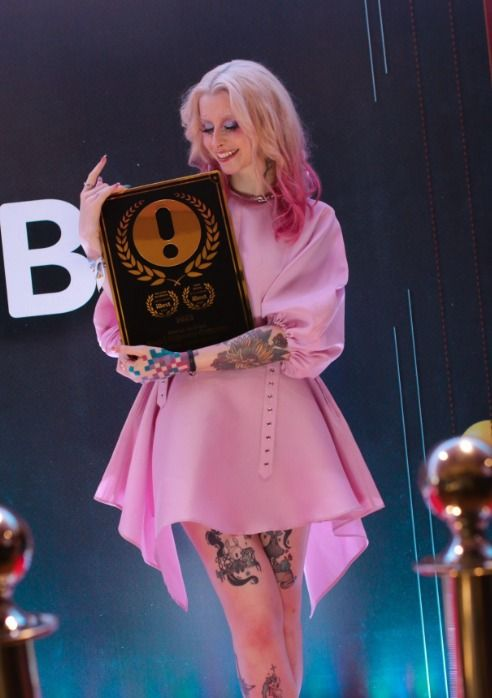

Gabriela "Gabi" Cattuzzo, ou simplesmente Gabi, é uma das mais famosas gamer girls e influenciadoras digitais do Brasil, conhecida pelas suas livestreams de jogos que começou a fazer entre 2017 e 2018. Atualmente, ela consegue uma média de 1000 a 2000 espectadores simultâneos a cada live que faz.
Recentemente, Gabi Cattuzzo ganhou o prêmio ibest de stremer influenciadora
Um projeto que marcou a carreira da Streamer, foi participar do projeto de seu amigo, e também criador de conteúdo, Cellbit. O projeto se trata de um RPG de mesa que leva o famoso e conhecido título de "Ordem Paranormal"
Pesonagens jogados pela Bagi em Ordem Paranormal